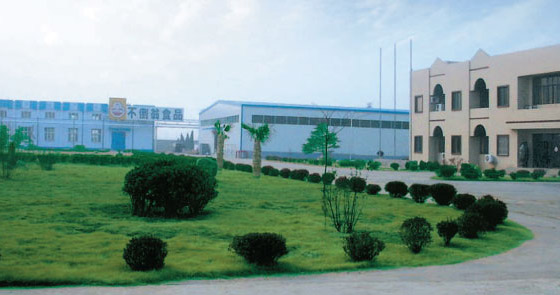
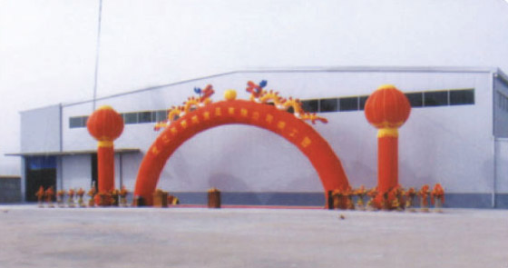
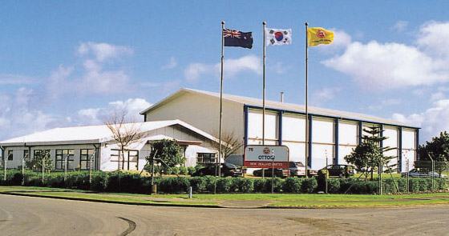
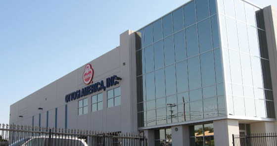
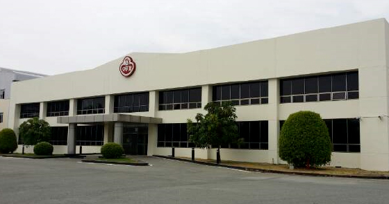

사업장 소개
- 해외 사업장
- 참신한 발상과 급변하는 소비자의 기호에 빠르게 대응하며 제품에 대한 소비자 욕구를 신속하게 수렵하고 또 예측하면서
언제나 새로운 식품문화 개발에 노력하고 있습니다.
해외 사업장 현황
중국

- 중국 강소 부도옹식품유한공사
- 1994년 6월 설립, 중국 강소성 소재, 농산물 건조, 농축, 냉동가공
부도옹식품유한공사는 중국 강소성에 위치하고 있는 농산물 건조, 농축 및 냉동가공을 주로 하는 중국 현지법인으로 우리회사의 첫 번째 해외투자 사업입니다. 1994년 향후 도래할 아시아, 태평양 시대에 대비하여 역사적, 지리적으로 가깝고, 시장 잠재력 및 성장 가능성이 높다는 점이 중국에 투자하게 된 가장 큰 동기가 되었습니다. - 부도옹식품유한공사는 국내에 있는 농산물 회사보다 더 철저한 품질관리를 통하여 클레임 없는 제품을 생산하여 우리회사에 공급하고 있으며, 질 좋은 제품을 바탕으로 제3국 수출을 모색하는 등 종합 식품 회사를 지향하며 영업 활동을 진행하고 있습니다.
-
주소중국 강소성 연운항시 동해현 경제개발구
전화86-518-8726-8845
팩스86-518-8726-8842

- 중국 강소 부도옹식품유한공사
- 2002년 4월 설립, 중국 강소성 소재, 당면 생산
태동식품유한공사는 중국 강소성에 위치하여 당면생산을 주로 하는 중국 현지 법인입니다. 2002년 한중 교류 10주년에 즈음하여 양국간 교역량이 급증하고, 중국의 원료 및 상품 기지로서의 역할이 증대되어 향후 우리나라의 가장 큰 시장이 될 수 있는 잠재력을 고려하여 투자하게 되었습니다.
태동식품유한공사는 현지의 품질 좋은 원료를 사용함으로써 양질의 제품을 생산하고, 중국 내수 및 수출의 활로를 적극적으로 개척해 나아갈 예정입니다. -
주소중국 강소성 연운항시 동해현 경제개발구
전화86-518-8726-9670
팩스86-518-8726-9671
뉴질랜드

- 오뚜기 뉴질랜드
- 1997년 5월 설립. 뉴질랜드 오클랜드 소재. 소스,마요네스 등 생산 및 한국의 라면등 수입판매. 청정지역 뉴질랜드에 오뚜기가 있어 안전합니다. 오뚜기 해외법인 중 하나인 오뚜기 뉴질랜드는 1995년 공장 설립을 비롯한 제반 사업을 통해 1997년 5월 개시, 오뚜기 뉴질랜드㈜(OTTOGI New Zealand Ltd.)라는 뉴질랜드 현지 법인을 설립하였습니다. 뉴질랜드에 오뚜기 해외법인을 설립한 목적은 쇠고기 원료 및 쇠고기 관련 제품 생산을 하기 위함 입니다.
- 뉴질랜드는 국토의 30%가 임야지대이고, 50%이상이 농토로 이루어져 싱싱한 목초지, 오랜 일조시간, 온난한 겨울과 풍부한 강수량 등 자연환경을 바탕으로 한 축산업의 낙원이기 때문입니다. 뉴질랜드의 쇠고기를 원료로 하여 오뚜기의 라면스프, 사골곰탕, 설렁탕, 꼬리곰탕, 갈비탕, 육개장 등 제품에 사용하는 사골엑기스와 비프엑기스를 제조하고 있으며, 3분류 등 오뚜기 제품에 뉴질랜드 쇠고기가 사용될 수 있도록 합니다. 뉴질랜드에서는 18개월~30개월 연령의 어린 소만을 도축하여 사용하고, 구제역이나 광우병 같은 질병발생이 일어나지 않습니다.
- 이는 농림부 검역원(MAFReg)의 엄격한 가축관리 제도와 천연 목초비육의 원칙을 고수하는 축산업계의 노력에 의해 자연히 이루어진 결과입니다. 나아가 오뚜기 뉴질랜드 해외법인 공장 또한 오뚜기 뉴질랜드 공장에서는 소스, 마요네스 등을 생산하여 현지판매를 통해 오뚜기의 기술로 해외교민 뿐만아니라 현지인에게도 우수한 제품을 공급하고 있습니다.
원료에서부터 최종제품까지 안전한 오뚜기 제품으로 안심하시고 맛있게 드세요. -
주소76 Rangi Road Takanini Auckland NewZealand
전화64-9-267-7476
팩스64-9-267-2793
미국

- 오뚜기 어메리카
- 2005년 5월 설립, 미국 캘리포니아 소재, 카레, 라면, 소스, 3분 제품, 참기름 등 판매
OTTOGI AMERICA는 북미지역 현지인들에게 당사 제품 판매를 목적으로 2005년 5월에 설립된 미국 현지 법인입니다. - 카레, 프리믹스, 양념, 소스, 3분제품, 참기름, 라면 등 종합 식품메이커로서 당사의 독점기술, 브랜드 등을 통한 경쟁우위로 북미지역 한국 식품 시장을 선도하고 미 주류 식품시장 내 최고의 아시안 기업으로 도약, 오뚜기의 세계화를 주도하는 Global Company의 초석이 될 것 입니다.
-
주소1650 W, El Segundo Blvd. Gardena, CA 90249
전화310-324-1094
팩스310-324-3811
베트남

- 오뚜기 베트남
- 오뚜기베트남은 2007년 베트남에 법인을 설립하고 생산설비를 완료한 후 2009년 첫 시험 생산을 했습니다.
빈증 미푹공단의 1만여 평의 부지 위에 세워진 오뚜기베트남은 2010년 1월, 식초를 시작으로 토마토케찹, 골드마요네스, 허니머스타드, 소스류, 드레싱류 등을 생산하여 베트남 내수 시장에 그 영역을 확대해 가고 있습니다.
아울러 한국 및 중국에서 라면류, 참치류, 양념류, 소스류, 국수류, 당면류 수입을 통해 한국식품의 우수성과 좋은 맛을 알려 베트남 내수 시장을 개척 하고 있습니다.
또한 신선하고 맛있는 열대과일을 이용한 열대 과일 퓨레와 후추를 한국에 공급하는 원료 기지로서의 역할을 함께 수행하고 있습니다. - 오뚜기베트남은 영업과 제조가 동시에 출범한 첫 해외 법인으로써 오뚜기의 앞선 기술과 품질, 다양한 제품을 바탕으로 베트남시장은 물론 향후 동남아시아 전체로 그 영역을 넓혀 나갈 것입니다.
호치민과 하노이에 영업망을 구축하여 한국의 다양한 상품을 수입하여 판매를 겸하고 있으며, 한국의 우수한 제품의 맛을 베트남에서 직접 맛볼 수 있도록 하여 베트남국민들의 식생활 개선에도 기여하고 있습니다. -
빈 증 공장
주소LOT G-3-CN, NA1 St, Myphuoc2 Industrial Park, Ben Cat Dist, BD
전화0650-355-6177
팩스0650-355-6178
-
호치민영업
주소CENTEC Tower, 6FL Room605, 72-74 Nguyen Thi Minh Khai St, Ward6,Dist3, HCMC
전화08-6299-4002
팩스08-6299-4003
-
하노이영업
주소103, A1-5, 79 Iane, Nguyen ChiThanh St, Lang Ha Ward, Dong Da Dist, Ha Noi
전화04-3773-9667
팩스04-3773-9667